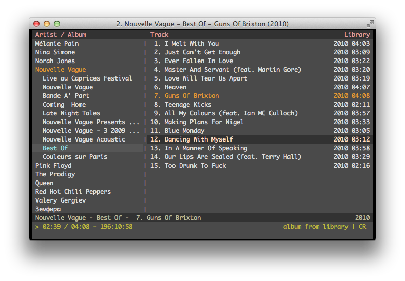

cmus is a small, fast and powerful console music player for Unix-like operating systems.

{kind=link}
Features
Plugins
- Input: Ogg Vorbis, MP3, FLAC, Opus, Musepack, WavPack, WAV, AAC, MP4, audio CD, and everything supported by ffmpeg (WMA, APE, MKA, TTA, SHN, ...), libmodplug and BASS
- Output: PulseAudio, ALSA, OSS, JACK, RoarAudio, CoreAudio, libao, sndio (OpenBSD), aRts, Sun, and WaveOut (Windows)
Playing
- Gapless playback
- ReplayGain support
- MP3 and Ogg streaming (SHOUTcast/Icecast)
- Play queue
- Optional playback resume on startup
Interface
- Instant startup, even with thousands of tracks
- Powerful playlist filters / live filtering
- Easy to use directory browser
- Customizable colors
- Dynamic keybindings. You can bind a key to any command,
:seek +1mfor example - Vi / less style search mode
- Vi style command mode with tab completion
Misc
- CUE sheets support
- Excellent compilations handling
- Uses Unicode internally for all string handling
- Supports audio scrobbling (to e.g. Last.fm or Libre.fm) etc. via status display programs
- Can run external commands for the currently selected files (tag-editor for example)
- Can be controlled via UNIX socket using
cmus-remotecommand - Known to work on Linux, OS X, FreeBSD, NetBSD, OpenBSD and Cygwin
Documentation
Installation
In case your favourite package manager provides an up to date version of cmus (see list of cmus packages), installation is straightforward, e.g.:- Debian/Ubuntu Linux:
sudo apt-get install cmus - Arch Linux:
sudo pacman -S cmus - OS X:
brew install cmus
Usage
cmus comes with a great reference manual. If you have it installed, tryman cmus-tutorial,
man cmus and
man cmus-remote.
Online Documentation
- cmus wiki
- Articles about cmus (part of the wiki)
Download
Stable Releases
- cmus-2.9.1.tar.gz, released 22.01.2021
A lot of minor improvements and fixes compared to 2.8.0. See release notes for a more complete list of changes. - cmus-2.8.0.tar.gz, released 29.01.2019
Highlights of the release are CoreAudio output plugin, D-Bus (MPRIS) support, and ability to work with multiple playlists. See release notes for a more complete list of changes. - cmus-2.7.1.tar.gz, released 13.07.2015
Cmus has gained support for conditionals in format strings, sndio output plugin (OpenBSD), VTX input plugin (ZX Spectrum, Atari, Amstrad CPC), and optional mouse support. More detailed list of changes can be found in the release notes. - cmus-2.6.2.tar.gz, released 29.06.2015
Major new features are display of all tracks when artist is selected in tree view, JACK output and Opus input plugins. Please see release notes for a more detailed list of changes since 2.5.x. - cmus-2.5.1.tar.gz, released 14.05.2014
Since 2.4.x., cmus has gained CUE sheets support, cdio input plugin, new «zenburn» color scheme, as well as tons of minor enhancements and new features — detailed release notes can be found here. - cmus-v2.4.3.tar.bz2, released 30.11.2011
Compared to 2.3.x series, this release features tons of improvements, with most notable ones being live library/playlist filtering and playback resume support — please see the full release notes here. - cmus-v2.3.5.tar.bz2, released 10.04.2011
Among other things, this release (compared to 2.2.0) features gapless MP3 playback, native PulseAudio support, faster startup, and much improved compilations handling. - cmus-v2.2.0.tar.bz2, released 27.07.2007
When trees were tall, and grass was green...
{kind=link}
Bleeding Edge
If you want to help cmus development and be among the first to try the latest and greatest features, use the master branch, e.g.:
git clone https://github.com/cmus/cmus.git
cd cmus
./configure prefix=$HOME/cmus
make installYou may want to add the installation directory to your PATH, e.g.:
echo 'export PATH=$HOME/cmus/bin:$PATH' >> ~/.bashrc ; . ~/.bashrcDon't hesitate to submit an issue if you have any problems, suggestions or bug reports.
Development
GitHub page
Issue Tracker
Please use the GitHub issues page for any problems, suggestions, or bug reports.
Mailing List
The mailing list now serves as an archive for old releases and issues.
- cmus-devel@lists.sourceforge.net (archived)
- Gmane (mirror)
Dependencies
- ncurses (ncursesw recommended)
Optional Dependencies
- libpulse (PulseAudio)
- alsa-lib (ALSA)
- OSS (OSS)
- libroar (RoarAudio)
- libao (libao)
- aRts (aRts)
- libcdio (cdio plugin)
- libcddb (cdio plugin)
- FLAC (.flac)
- Opus (.opus)
- libvorbis (.ogg)
- libmpcdec (.mpc, .mpp, .mp+)
- wavpack (.wv)
- libmad (.mp3)
- libavcodec (.wma, .ape, .mka, .tta, .shn, ...)
- FAAD (.aac)
- mp4v2, FAAD (.mp4, .m4a, .m4b)
- libmodplug (.mod, .s3m, ...)
- libmikmod (.mod, .s3m, ...)
- BASS (.mod, .s3m, ...)